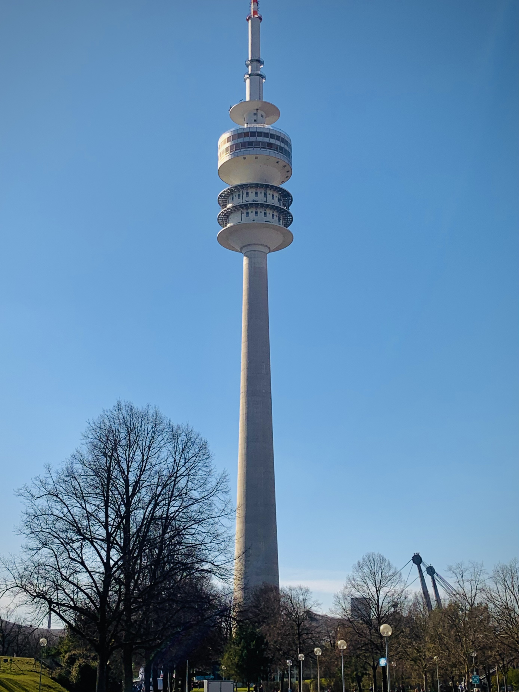
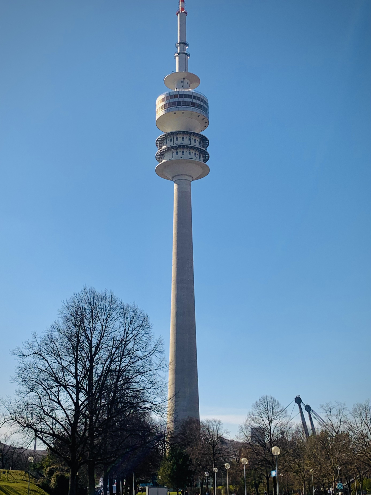

2023
REISE NACH DEUTSCHLAND
NATHAN DEBATY
FREITAG - TAGESZEIT
Die Reise beginnt:
Am freitag hat die Reise beginen. Mit 9 stunde in das Bus, konnete dich viele etwas machen, mit zum beispeil:
-monopoly und card spielen
-musik hören
-untericht lernen
-sprachen mit freunden und musik singen.
Die Landschaft war wunderbäch, wir haben gesehen das schwiss berg, deutsch kampagne mit schöne Dorf mit Kirche und Munich zentrum.
FREITAG - ABEND
Am abend nach der Straße, gingen wir im Munich Zemtrum. Ich bin zum ersten Mal mit der U-Bahn gefahren, was ich sehr schön finde. Nach der U-Bahn sind wir in der Zentrum gelaufen, wo wir eine kleine Kirche sehen, die heißt: Asam Kircke.
Von 12 bis 13 Uhr wie war in eine Art Museum mit viel malen von aller modern Epochen. Mein lieblingmalen ist von Franz Radziwill gemalt 1949 nach dem zweiten Krieg.
SAMSTAG - MORGEN
Samstag haten wir München besuchen.
Am Morgen wir gingen am Marienplatz. Im diese platz finden wir das Neues Rathaus wieder aufbauen nach der krieg wie die ganze Stadt.
Um 11:45 sahen wir das Glockenspiel.
Es war auch ein shöne brunnen, die heißt: Fishbrunnen.
Nach wir sind auf das Viktualien Market gegangen wo wir Brezel gekaufen für 1€.
Wir konnten das 30m Maibaum sehen.
 

Wir sind dann der Straße nach Bayern, auf sahen wir das Fußballstadion von Bayern. Alles waren begierig und stresst, ihren Korrespondent treffen davon ich.
Am mittag sind wir essen im der Olympiapark. Wir sehen den Fernsehturm und shöne Auto weil das BMW museum nicht lange war. Wir waren nach dem essem dort. Ich interessiere mich nicht für Autos, aber das Archiketur und der Autos sehr shöne und modern war.
SONNTAG
Nach dem Kennenlernen der 30min Fahrt nach Liesberg wo sie leben, wir haben Raclette essen und gespilte im Keller.
In der Familie gibt es eine großn Bruder: Elliot.
Eleni ist die Jüngste. Der Vater ist Reanimationsarzt und die Mutter Übersetzerin sein.
Das Haus ist groß mit einem Garten, ein Spielzimmer im Keller...
Sonntag war mein Liebling tag von der Reise weil ich habe viel spaß und der Besuch in Bamberg war sehr schön.
Wir gingen im ein Sommerrodelbahn, ich hatte viel spaß, nach wie gingen im Bamberg zentrum wo ich ein Eis hatte und ein Schloss, rathaus... besuchte.
nächste ->
Montag
Montag morgen gingen wir im der Schule und wir haben der Frühstück. Dann haben wir besucht das Kloster neben der Schule. Die Schwägerin erzahlte legende von die Orte. Wir besucht die moderne Schule wo der jüngste arbeit. Nach sind wir in der village gelaufen. Ich habe unterricht in Physik, Mathematik und Wirtschaft bis 13 Uhr. Ich finde die deutsche Schule besser als die franzosische Schule war die schuler sind freier, es gibt keine Aufseher, Zaun... und die Unterricht sind nicht als lang.
Nachmittag, wir haben eine Schatzsuche gemacht im Bamberg, ich habe viel lernen.
nächste ->
Dienstag
Dienstag morgen haben wir fragen für ein Interview mit tutorinen geschrieben. Wir sprachen über die Unterschiede zwischen deutsche Schule und französische Schule und wir sind vertig mit ein memory spiel.
Nachmittag wir liefen im Bamberg. Die Stadt war sehr schön und ich kaufte Geschenke für meine Familie in ein berühmte Schokoladenfabrik. Mit Eleni ich auch in Liesberg gelaufen.
nächste ->
Mittwoch
Mittwoch war ein sehr interessant Tag, wo ich habe viel gelernt. Nach eine Busfahrt nach Nürnberg wir kommen am das Dokumentationszentrum über NSDAP Kongress. Dieses Zentrum war sehr interessant besonders, dass ich mag Geschichte und das Gebäude war sehr groß und beeindruckend. Nachmittag besuchten wir das Haus von Albrecht Dürer und dann wir auf die Spitze. Der Sicht war Schön. Abends habe ich Spiele gespielt Tischfußball mit Eleni
nächste ->
Donnerstag
Donnerstag wir gingen im Wurzburg, eine Stadt bekannt für ihr schön Schloss das wir besuch. Die Wurtzbourg residenz ist barock und symmetrisch mit viel zimmer und ein schöne Garten wo wir habte essen. Mein liebling zimmer war der Großes Treppenhaus-Fresko.
Nachmittag, wir sind in Wurtzbourg gelaufen und bewundert.
nächste ->
Freitag, der letzte Tag
Freitag morgen, ich sagte auf Wiedersehen zu Eleni. Die Busfahrt war schön mit dem Sonnenuntergang und wir hatten viel Spass und viele Süßigkeiten. Wir auch hatte ein gute Nachricht das die 'Weißes Patent' abgesagt sein. Wir sind am College kommen am 20h. Wir haben Stephan (Der Busfahrer) gedank.
Am Donnerstagabend gibt es ein Party im der village mit alles Lehrer, Familie, Schüler... Wir hatten viel Spaß.